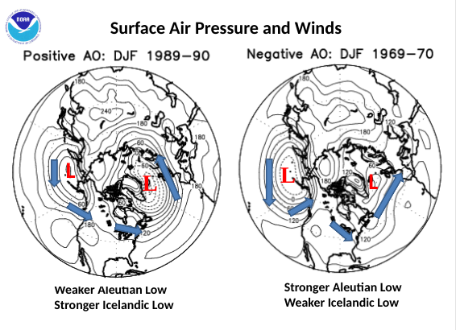
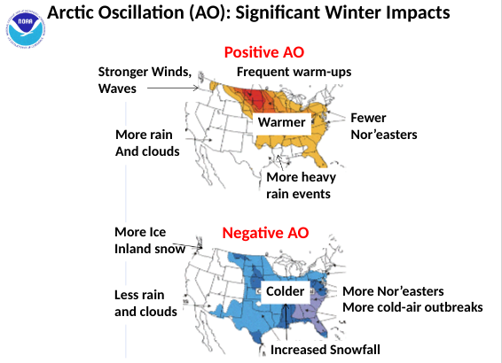
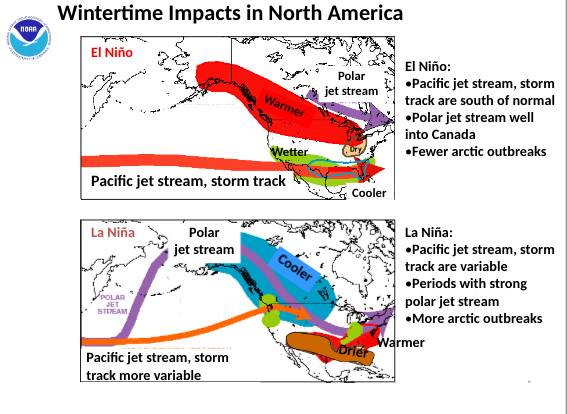
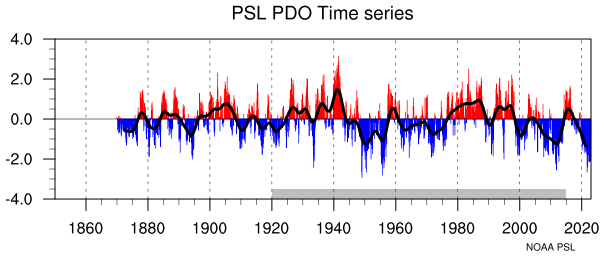
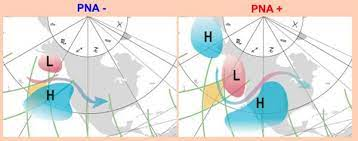
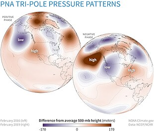
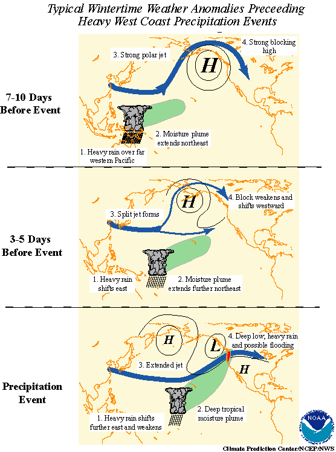
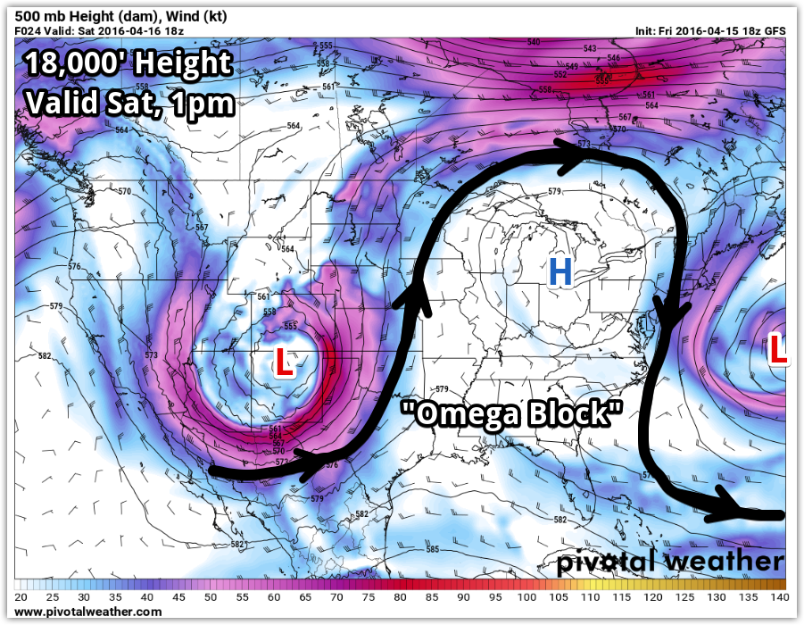

Jet Stream and Oscillations
- AO
Arctic oscillation
- The difference of low pressure in the arctic iceland ocean and and pressure in the alaskan and russian ocean
- The weak aleutian low/strong icelandic low or positive AO is what's needed in a warm wetter winters like what we are in right now and the right ingredients for a more active/longer winter time server storms season(not snow)
- What we would want to see for a white christmas and snower condition for christmas is a negative AO and a strong aleutian low/weak icelandic low which out bring colder and snowy winters

Our current state in the U.S 2023 we are having an abnormally warm winter due to this 
- Nor'easters are coastal storms on the East Coast of North America. The jet stream's interaction with cold air masses and the Atlantic Ocean can lead to the intensification of these storms, resulting in heavy snowfall or rain.
2. ENSO
El Nino/La Nina
- El Nino, A nature phenomenon that happens eerie 3-6 years and makes the pacific oceans temps above average this bring more severe weather some might say but it just bring different weather patterns compared to la nina
- But the El Nino bring warmer and wetter season to the mid is and causing an arguably more server season
- La Nina is on opposite of El Nino (wow surprise) and brings a cooler dryer for the most of the us but a more complicated (on average) to the east coast and could see more server or marginal weather
- But the El Nino brings fewer arctic outbreaks (can you guess why?????) which we are in now and La nina causes more arctic outbreaks and colder winters
Which i might add that last year we had a La Nina negative AO which we very high amounts of snow in michigan as I remember and this year we got El nino and +AO which granted us a very warm wet winter with not a lot snow ( not just caused AO and ENSO)

3. PDO
Pacific Decadal Oscillation
- PDO is a very large scale “El Nino” so to say this happens along side the the regular El Nino and La Nina but this has larger effects on the climate which can bring warmer temperatures to much of the us and North Americas when its in its warm phase
- PDO has 2 phases to it the “warm” and the “cool” which both have varying effects of the climate as of mean temperatures


4. PNA
Pacific–North American teleconnection pattern
- The PNA has a positive and negative phase like many other oscillations here and the + has low pressure in the alaskan ocean high pressure in the rockies and low in the midwest, And the negative has high pressure in the alaskan ocean low pressure in the rockies and high pressure in the midwest/east coast
- The +PNA brings low pressure ridges to the U.S and making cold outbreaks less likely, these low pressure systems are usually in the western parts of canada and the rockies
- The -PNA brings low pressure to the rockies and high pressure to the east
- The -PNA bring warmer temperatures to the west but dry due to the high pressure not bring up any moisture from the ocean along with that the jet usually above so the warm air stays there , the East gets the high pressure when it crosses the east there
- The +PNA brings low pressure to the west and a southern trough bring colder temps to the west and high pressure to the rest of the U.S and warmer temps with a ridge in the east.



5. Omega Block
- The omega block is a natural thing that happens randomly and bring a 𝛀 shape to the U.S and usually bring good weather due to it being a high pressure system but no always
- The omega block could bring worse weather to the bottom of it due to the trough it bring if the conditions are correct if the there is any moisture in the atmosphere to help with the development of storms
- 